Virtuelles Wasser – Dem unsichtbaren auf der Spur
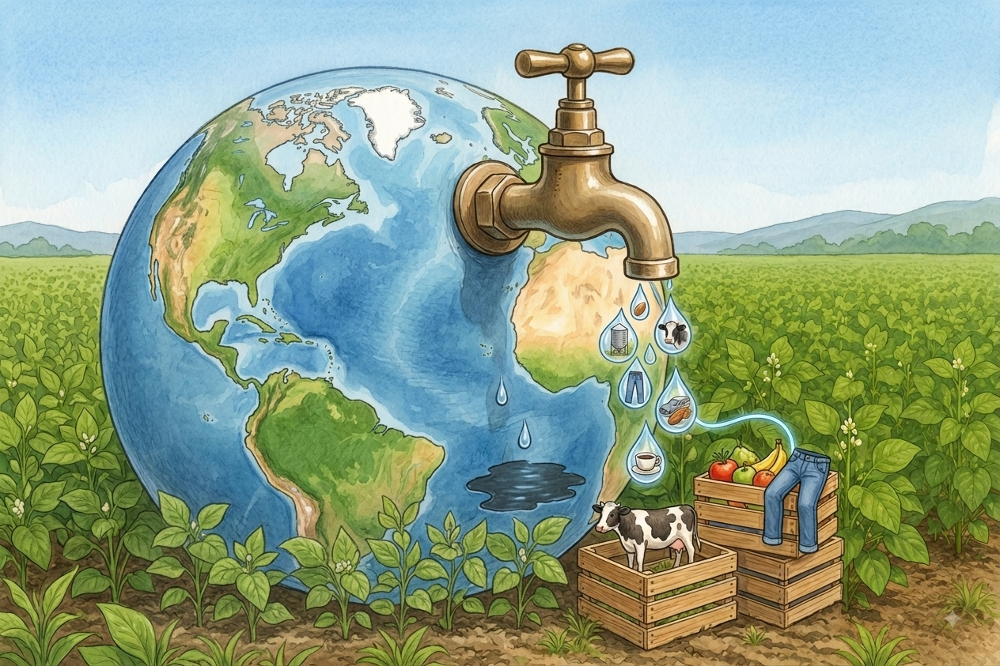
Wenn du morgens den Wasserhahn aufdrehst, um dir die Zähne zu putzen, ein Glas Wasser trinkst oder unter die Dusche hüpfst, siehst du das Wasser fließen. Das nennen wir direktes Wasser. In Deutschland verbraucht jeder Mensch davon etwa 125 Liter am Tag das ist ungefähr eine volle Badewanne.
Doch das ist nur die Spitze des Eisbergs. In Wahrheit verbraucht jeder von uns jeden Tag fast 4.000 Liter Wasser! Wie kann das sein, wenn wir es doch gar nicht sehen?
Die Antwort lautet: Fast alles, was wir essen, anziehen oder benutzen, hat einen unsichtbaren „Wasser-Rucksack“ auf. Um einen Apfel wachsen zu lassen, ein T-Shirt zu nähen oder ein Smartphone zu bauen, werden riesige Mengen Wasser gebraucht, verdunstet oder verschmutzt. Dieses versteckte Wasser nennen Forscher virtuelles Wasser.
Schau dir einen einfachen Apfel an: Am Baum braucht er monatelang Regen und Grundwasser, damit er saftig wird. Nach der Ernte wird er gewaschen, sortiert und verpackt. Bis er in deiner Brotdose landet, hat ein einziger Apfel etwa 125 Liter Wasser geschluckt" - das ist mehr als ein ganzes Schulfass voll!
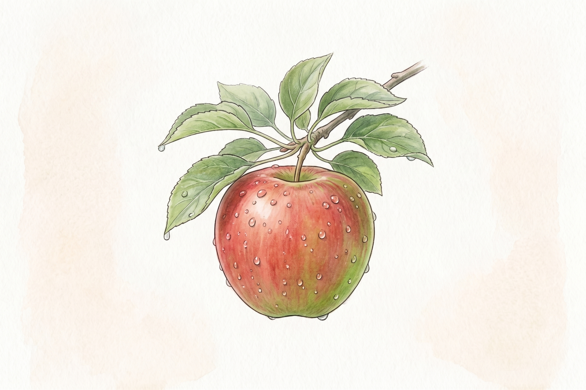
Noch viel extremer ist es bei tierischen Lebensmitteln. Eine Kuh frisst im Laufe ihres Lebens riesige Mengen an Getreide und Soja. Diese Futterpflanzen müssen monatelang auf Feldern bewässert werden. Rechnet man das gesamte Futter, das Trinkwasser der Kuh und die Schlachtung zusammen, stecken in nur einem einzigen Kilogramm Rindfleisch über 15.000 Liter Wasser!
Wasser ist nicht gleich Wasser. Um zu verstehen, wo das virtuelle Wasser herkommt, teilen Forscher es in drei Farben ein:
Grünes Wasser: Das ist natürlicher Regen, der im Boden gespeichert wird und Pflanzen wachsen lässt. Wenn Getreide auf einem fränkischen Feld durch Regen wächst, ist das grünes Wasser. Es schadet der Natur meist nicht.
Blaues Wasser: Das ist Wasser aus Flüssen, Seen oder tief aus der Erde (Grundwasser), das künstlich auf Felder gepumpt wird. Wenn Erdbeeren im trockenen Süden Spaniens oder Baumwolle in der Wüste bewässert werden, fehlt dieses blaue Wasser den Menschen und Tieren vor Ort.
Graues Wasser: Das ist Schmutzwasser. Wenn beim Färben einer Jeans giftige Farben ins Abwasser fließen oder Dünger ins Grundwasser sickert, muss sauberes Wasser hinzukommen, um das Gift zu verdünnen.
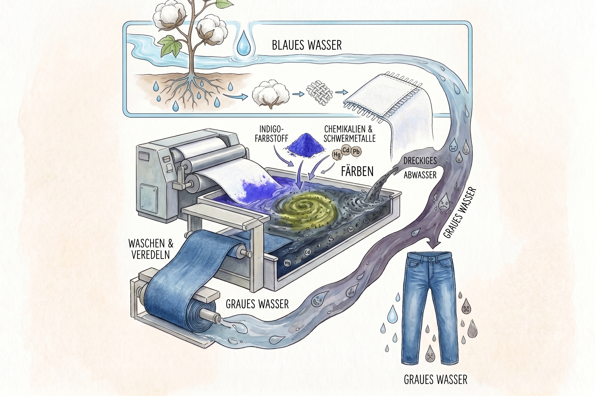
Deine Lieblingsjeans wiegt nicht viel - aber bei ihrer Herstellung verbraucht sie unglaubliche 8.000 Liter Wasser! Die Baumwolle wächst oft in sehr trockenen Ländern. Riesige Bewässerungsanlagen saugen dort Flüsse und Seen leer. Ein berühmtes Beispiel ist der riesige Aralsee in Asien: Weil das Wasser für Baumwollfelder abgezweigt wurde, ist ein fast meergroßer See fast vollständig zu einer staubigen Wüste vertrocknet, in der rostige Schiffe im Sand liegen.
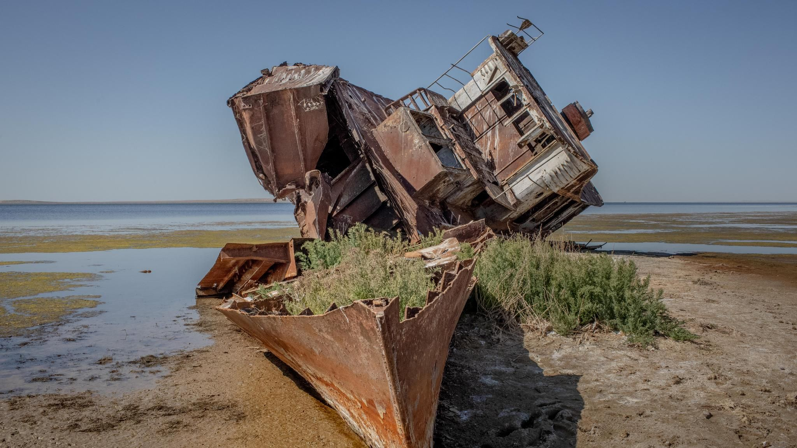
Wenn wir an eine Kuh auf einer oberfränkischen Weide denken, sehen wir saftig grünes Gras und frische Luft. Doch die meisten Nutztiere auf der Welt fressen nicht nur Gras, sondern Kraftfutter - vor allem Soja und Getreide.
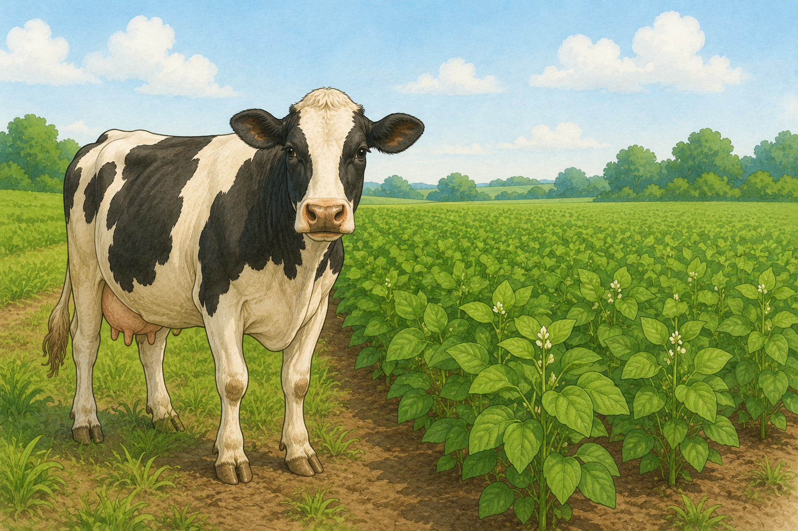
Soja ist eine Hülsenfrucht, die besonders viel Eiweiß enthält und Tiere schnell wachsen lässt. Riesige Sojafelder befinden sich in Südamerika, etwa in Brasilien. Um dort Platz für Felder zu schaffen, werden wertvolle Regenwälder gerodet. Bis das Soja geerntet, zu Futterpellets verarbeitet und mit Frachtschiffen über die Ozeane zu uns transportiert wird, sind gewaltige Mengen Regen- und Bewässerungswasser verbraucht worden.
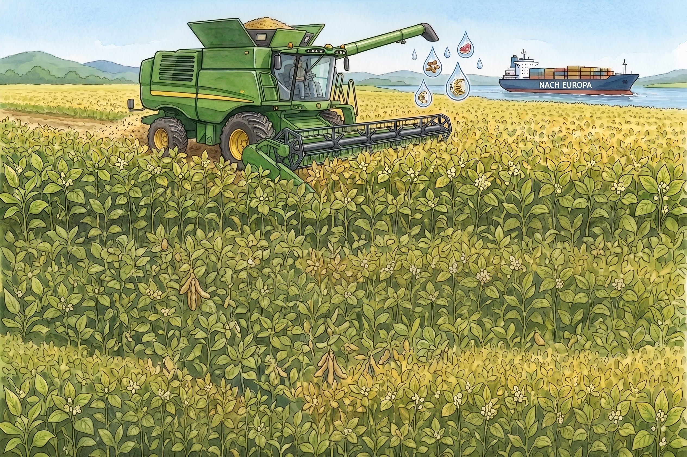
Kraftfutter für die Welt: Millionen Tonnen Soja werden jedes Jahr bewässert und geerntet, um als Tierfutter nach Europa transportiert zu werden.
Eine Kuh trinkt an einem heißen Sommertag zwar beachtliche 100 Liter Wasser, doch das eigentliche Wasser steckt im Futtertrog. Eine Mastkuh frisst tausende Kilogramm Getreide und Soja, bevor aus ihr Fleisch wird:
Pflanzliche Lebensmittel wie Kartoffeln (ca. 290 Liter pro kg) oder heimisches Gemüse schneiden im Vergleich um ein Vielfaches wassersparender ab, da der Umweg über das Tierfutter entfällt.
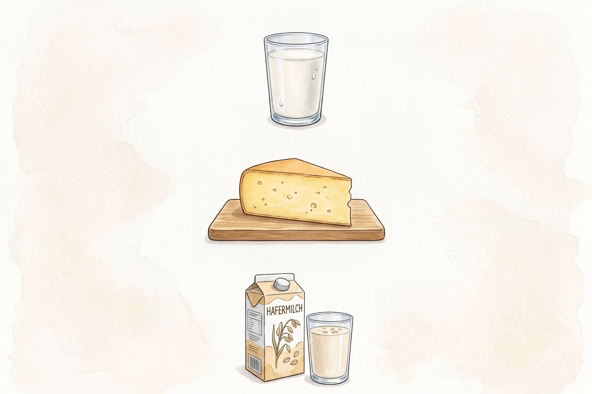
Auch Milch und Milchprodukte sind echte Wasserspeicher:
In 1 Liter Kuhmilch stecken im Schnitt rund 1.000 Liter virtuelles Wasser (für Futter, Stallreinigung und Verarbeitung).
Für 1 Kilogramm Schnittkäse werden rund 5.000 Liter Wasser benötigt, da man für ein einziges Kilo Käse etwa 10 Liter Milch eindicken muss.
Pflanzliche Alternativen wie Hafermilch aus heimischem Anbau schneiden deutlich besser ab: Ein Liter Haferdrink verbraucht nur etwa 30 bis 50 Liter Wasser.
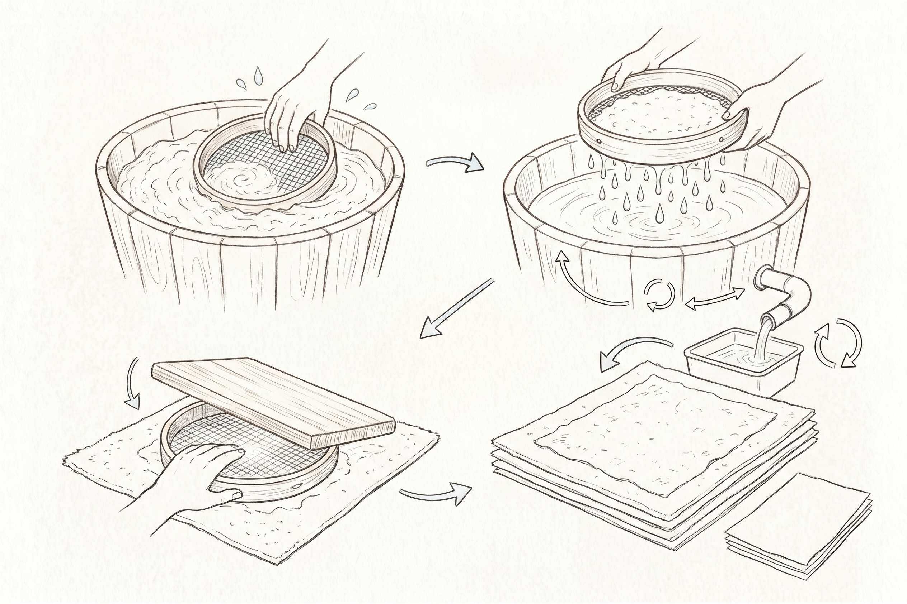
Wie du mit kleinen Schritten riesige Wellen schlägst
Für ein einziges Blatt frisches, weißes Papier aus neuen Holzfasern werden in der Fabrik bis zu 10 Liter Wasser benötigt - das ist ein ganzer Putzeimer voll! Denn das Holz muss mit viel Wasser und Chemie gekocht, gebleicht und ausgewaschen werden.
Bei Recyclingpapier (aus alten Zeitungen oder Kartons) sind die Papierfasern schon fertig. Man braucht sie nur im Wasser aufzuweichen und neu zu formen. Das spart über 70% Wasser und jede Menge Energie. Wenn deine ganze Klasse Hefte mit dem Umweltzeichen „Blauer Engel" nutzt, rettet ihr jedes Schuljahr tausende Liter sauberes Trinkwasser!
Virtuelles Wasser lässt sich nicht einfach am Hahn abdrehen aber du kannst jeden Tag mit deinen Entscheidungen bestimmen, wie viel Wasser auf der Welt verbraucht wird. Niemand muss perfekt sein oder auf alles verzichten. Wenn viele Menschen kleine Dinge verändern, spart das Millionen Liter wertvolles Trink- und Grundwasser.
Was du brauchst: 2 Seiten altes Zeitungspapier oder 1 Eierkarton, warmes Wasser, 1 große flache Schüssel oder Wanne, Pürierstab, 1 feines Küchensieb (oder ein Stück Fliegengitter auf einem Rahmen), 1 Geschirrtuch, 1 Nudelholz.
Und so geht's:
Erklärung: Die Papierfasern verhaken sich im Wasser von ganz alleine miteinander. Das abgetropfte Wasser in der Wanne ist nicht verloren man kann darin direkt das nächste Blatt schöpfen! Bei echtem Recyclingpapier geht kaum Wasser verloren, während bei neuem Papier aus Holzstämmen gigantische Mengen Frischwasser verbraucht und verschmutzt werden.
Bevor du das Wimmelbild erkundest: Wie viel virtuelles Wasser schätzt du in diesen alltäglichen Dingen?
Klicke auf die roten Punkte auf dem Tisch, um den versteckten Wasserverbrauch der Dinge aufzudecken:
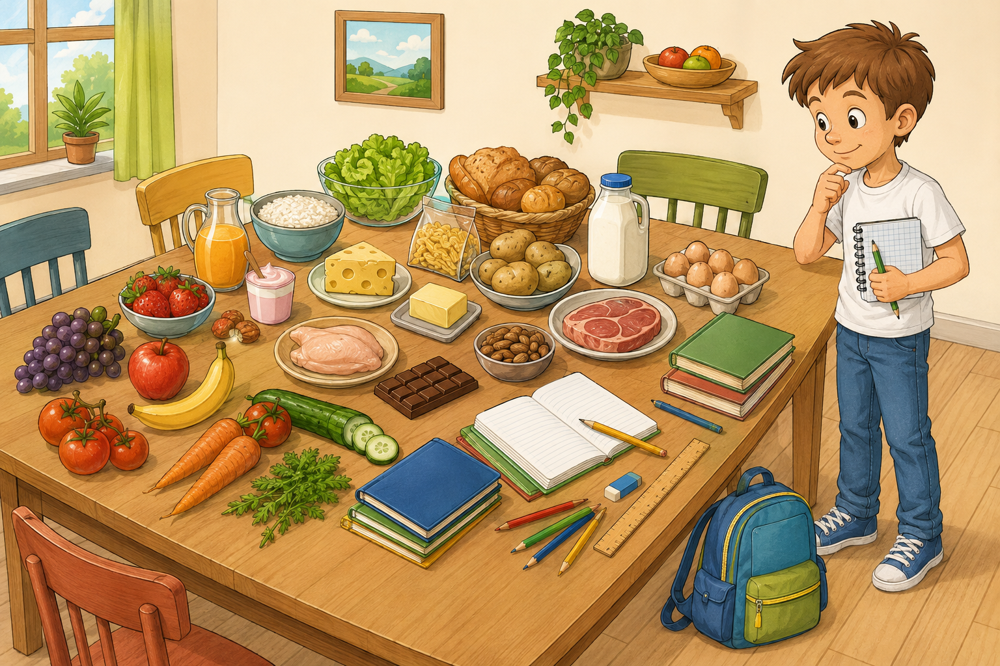
Hier sind 4 neue Produkte. Welches verbraucht wohl am meisten Wasser und welches am wenigsten? Schätze die Liter:
Ordne die Produkte nach ihrem virtuellen Wasserverbrauch ein (Ziehe die Kärtchen mit der Maus in die Felder):
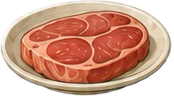
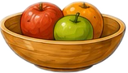
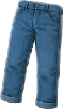
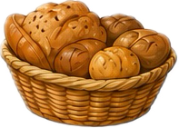
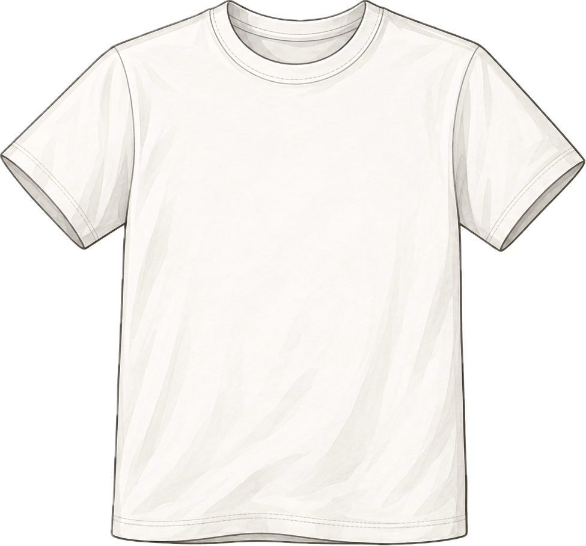
Welche Wasser-Farbe passt? Klicke auf die richtige Farbe und teste dein Wissen sofort:
Finde alle 6 zusammengehörenden Paare: